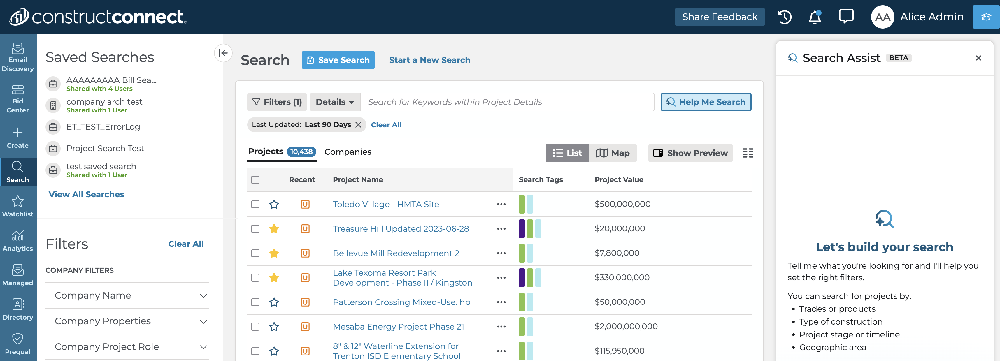
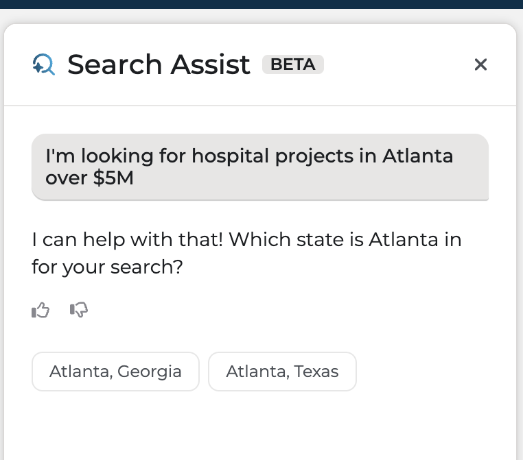
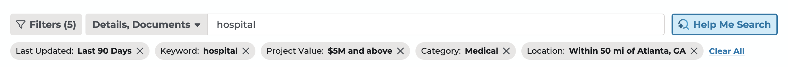
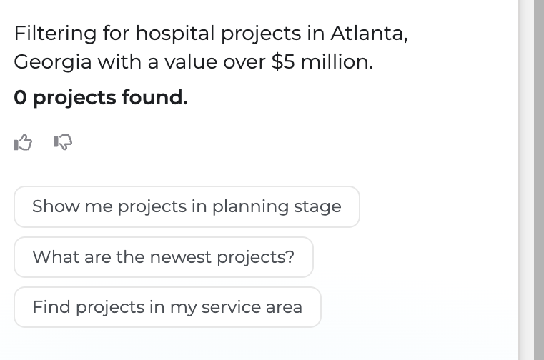

Search Assist
Natural language search for construction project data
Project Intelligence's search was built for power users: contractors and estimators who already knew how to translate project intent into filter logic. Search Assist lets everyone else describe what they're looking for in plain language, and it either starts a new search or modifies the one they already have.
I owned the end-to-end design, working in a triad with the product manager and the dev lead, from discovery through prototype validation and into the current beta.
89% of paid users who searched took meaningful action: project detail views, document access, watchlist additions. The other 11% abandoned before getting there, a gap with clear revenue implications at scale. At the same time, a direct competitor launched an AI-powered search experience that shifted user expectations across the market.
The filter system was powerful but invisible to users who didn't already know how to use it.
I translated the product brief into a design direction, ran discovery to validate the core assumption, prototyped the natural-language query parser for testing, and defined the UX copy standards that separated Search Assist from a related but distinct feature, hybrid vector search. I also presented the workflow internally as a model for AI-assisted design at ConstructConnect.
The leap-of-faith assumption we had to validate first: would users want natural language search alongside filters, not instead of them?
Customer discovery said yes, with a condition. Users were increasingly open to AI-assisted workflows, but a persistent concern was fear of missing out on a project if search became too curated or fully chat-based. They were hopeful AI could save them time, and distrustful that it could replace their judgment at the quality bar they need. That tension shaped the entire design: Search Assist layers onto the existing filter interface rather than replacing it.
A signal that changed our scope: named project lookups, meaning users searching for a specific project by name or partial description, accounted for roughly 40% of queries. The existing filter UI couldn't serve these at all.
The customer discovery record made the problem concrete. Interviewees across trades described results that felt like noise ("a flood of garbage coming in every day," in one contractor's words), confusion about why irrelevant projects appeared, and searches that only worked after a ConstructConnect employee built them. One user summarized the dependency plainly: a rep set up her saved searches on a call, and she never touched search configuration again.
We also had prior evidence. An earlier AI document panel had already demonstrated that these users respond to AI-assisted workflows when the interface feels conversational rather than transactional.
Story mapping in Miro surfaced where the handoff between intent and action was breaking down. With the product manager, an assumption risk matrix classified natural-language-to-filter mapping as our highest-risk, highest-value assumption: the thing to test before committing to build.
I designed five key states in Figma (default, active input, parsed results, the Filtered By panel, and suggestion states), then built a functional HTML/JS prototype in Cursor that accepted natural language queries and mapped them live to the real filter taxonomy: trade/CSI, location, bid stage, timeline, and project value. We tested two variants, search-only versus search plus filters.
Rather than a single usability round, validation is structured as a three-phase rollout, each phase gated by defined success criteria before advancing:
- Invited Beta: roughly 10 internal stakeholders plus 10 invited customers across trade contractors and building product manufacturers. Gates: filters applied or removed correctly and out-of-scope questions refused at a 99% rate, and a 3.5+ average on internal Likert-scale feedback.
- Early Availability: scaled to 50% of new users for a clean baseline comparison against a control group.
- General Availability: full rollout once Early Availability clears its gates.
Transparency over magic
When Search Assist maps a query to filters, it shows its work. Users see which filters were applied and why, and can adjust them directly. This wasn't a stylistic preference. Discovery found users distrustful that AI could replace their judgment at the quality they need. Visible reasoning and editable filters were the direct response to that distrust.
Conversational, not transactional
Search Assist builds searches iteratively through dialogue: clarifying questions, suggestions, visible reasoning. Users shouldn't have to know the filter taxonomy to get good results. Real interactions it handles:
- "I'm looking for hospital projects in Atlanta over $5M" starts a new search
- "My search includes temporary fencing, but I'm only interested in permanent fencing" modifies an existing one
- "Why am I seeing projects that are 5 years old?" surfaces suggested filters to narrow results
- "Why isn't this project in my search results?" compares a project against the user's criteria and explains the gap
Two AI features, two mental models
A critical decision was clearly separating Search Assist from hybrid vector search, a simultaneous but separate effort. Both touched the same search input; conflating them would have undermined the clarity of each.
| Hybrid vector search | Search Assist | |
|---|---|---|
| Input style | A keyword or project name | A description of intent |
| What changes | Results get smarter | The interface changes |
| Hint text | "Related terms work too" | "Describe what you're looking for" |
| Mental model | Smarter search box | Someone helping me set up my search |
Rollout gated on quality, not calendar
Each phase advances only when it clears defined thresholds. Invited Beta requires a 3.5+ average Likert score and a thumbs-down rate under 5% before Early Availability opens. Thumbs-down responses escalate on a sliding scale: 3.5% or higher triggers investigation, 5% or higher is treated as a critical issue and reprioritized above other work.
Search Assist lets users describe what they're looking for in plain language, grounded in construction terminology and the platform's own data, not a general-purpose chatbot bolted onto search. It starts new searches, modifies existing ones, explains filter definitions in place, and shows every filter it applies.

The panel opens alongside search, not instead of it. The filter sidebar and results stay visible and editable throughout.

Ambiguity becomes a question, not a guess. "Hospital projects in Atlanta over $5M" triggers a clarifying prompt instead of silently picking a state.

Transparency over magic: every filter Search Assist applies lands in the standard pill row, visible and removable. Note the inferred Category of Medical and the 50-mile radius.

The suggestion state turns zero results into a recovery moment, offering pivots in the panel instead of a dead end.
Internal beta ran expectation-first: participants wrote down real customer prompts and what they expected Search Assist to do before running them, so every response could be graded against a stated expectation instead of a vibe. Feedback was scored across five dimensions: filters, keywords, revisions, response length, and helpfulness.
Three themes came out of it:
- Filters vs. keywords is a philosophy, not a bug. Search Assist leaned on the trades filter; trainers who work with customers daily reported keyword search consistently serves users better. That tension is now explicit guidance work, not a silent default.
- Iteration friction beats parsing errors. The most repeated complaint wasn't wrong filters. It was having to exit and restart to try a new prompt. The conversational loop mattered more than single-shot accuracy.
- Multilingual support over-delivered. Testers ran full sessions in Spanish and German. Search Assist parsed intent, applied correct filters, and responded in kind, a value prop for English-as-a-second-language users that cost nearly nothing to include.
The first Invited Beta round ran June 23 to July 31, 2026; an expanded invited beta with a larger audience begins August 17. Advancement is gated, not scheduled: 3 of 5 participants saying they'd use it again, a 3.5+ aggregated Likert score, and a thumbs-down rate under 5%. Early Availability follows, at 50% of new users measured against a control group, with success defined as a 10%+ relative lift in the search-to-forward-action funnel.
Final numbers land when the expanded beta closes. Writing this up mid-flight is deliberate: the gates were set before the data came in, which is the part I'd want a reader to judge.
What worked: Prototyping early and testing the natural-language-to-filter mapping assumption before committing to full build saved significant engineering time. The expectation-first beta format also earned its keep. Grading responses against stated expectations produced actionable themes instead of scattered opinions.
Honest caveat worth keeping: beta participants are shown the feature directly and given a channel to ask questions, which could bias their responses relative to a cold, unassisted rollout. The Early Availability control-group comparison exists precisely to remove that bias.
What I'd do differently: This is the first AI feature I've designed, and the honest lesson so far is to open testing earlier and more often. The expectation-first beta produced the sharpest learnings of the entire project, and there's no reason a version of it couldn't have run against the Cursor prototype months sooner. I'm writing this while the work is still live, which is its own answer: the project isn't done teaching me yet.